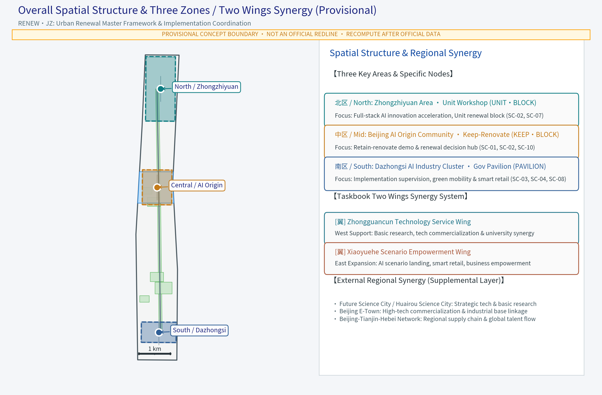
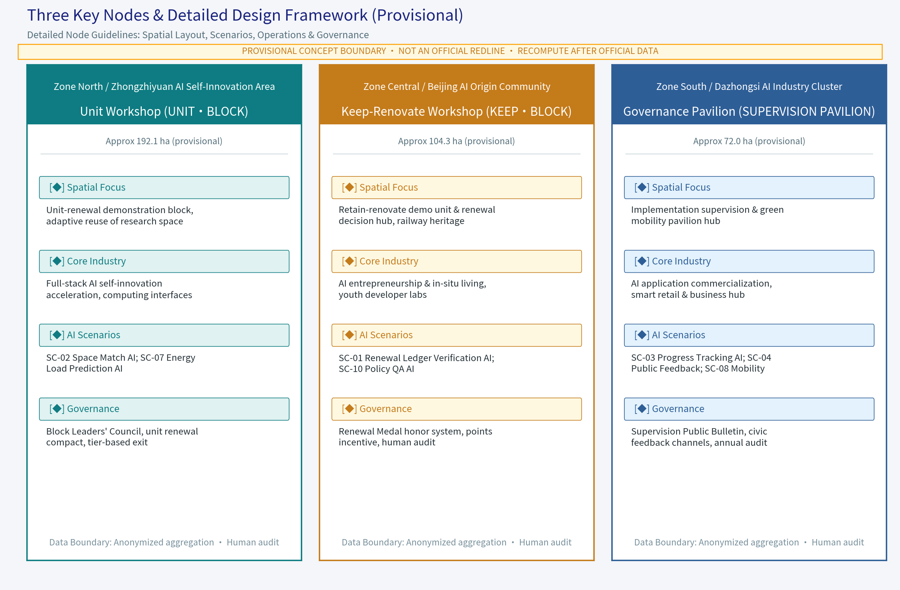
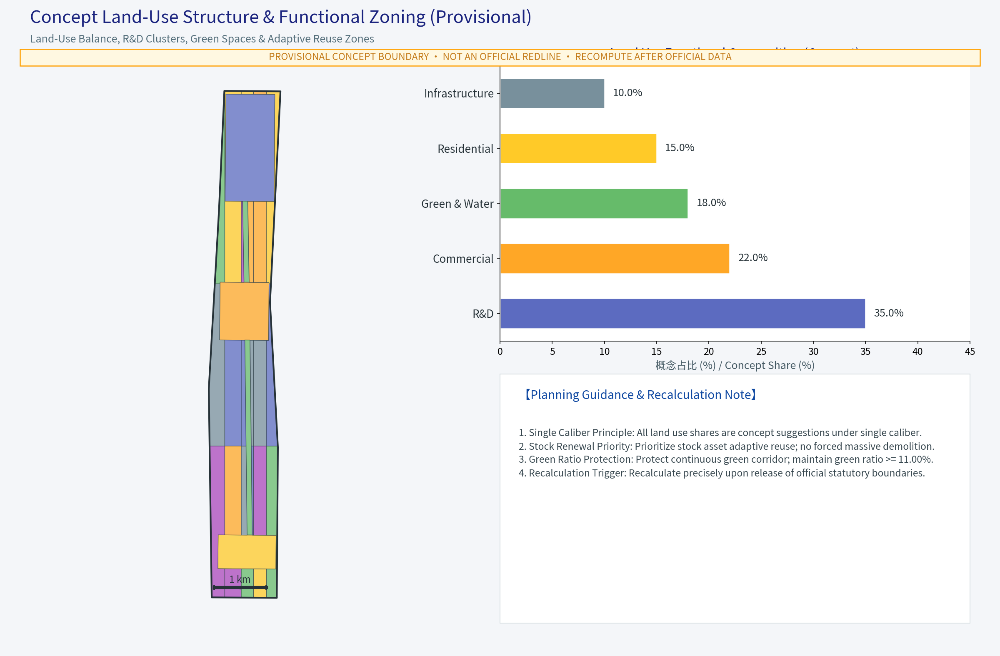
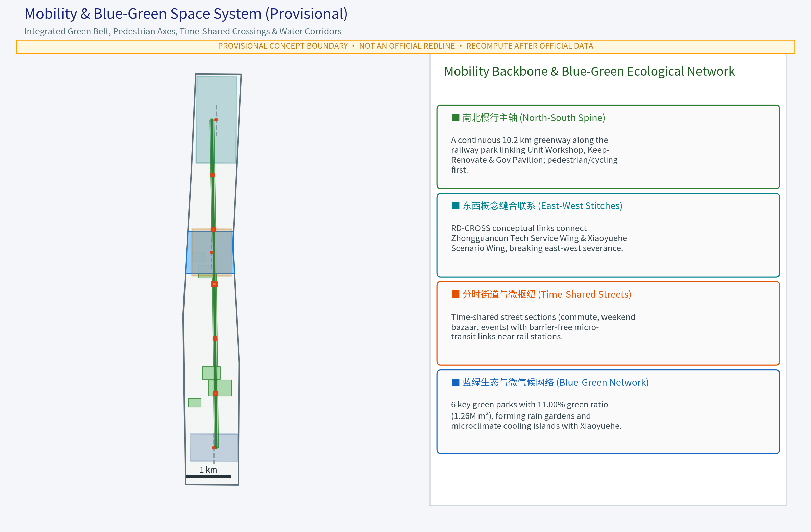
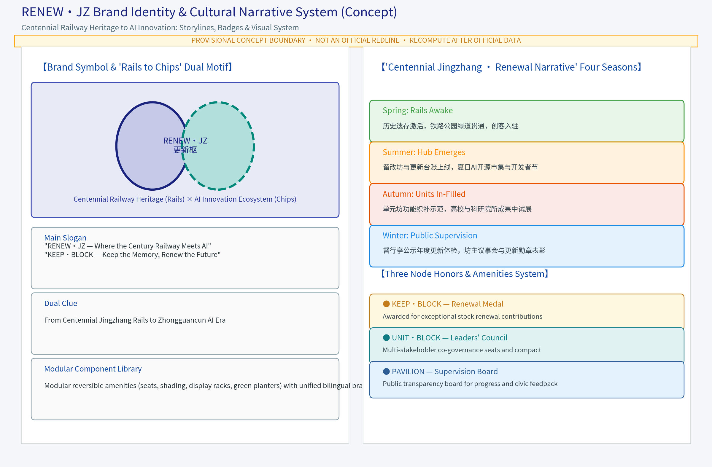
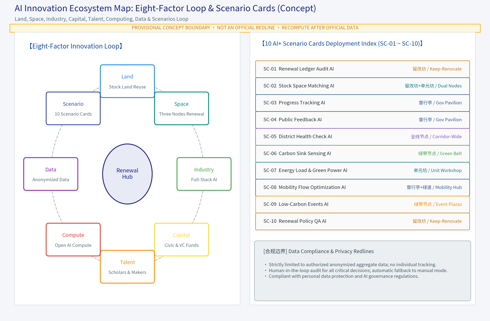
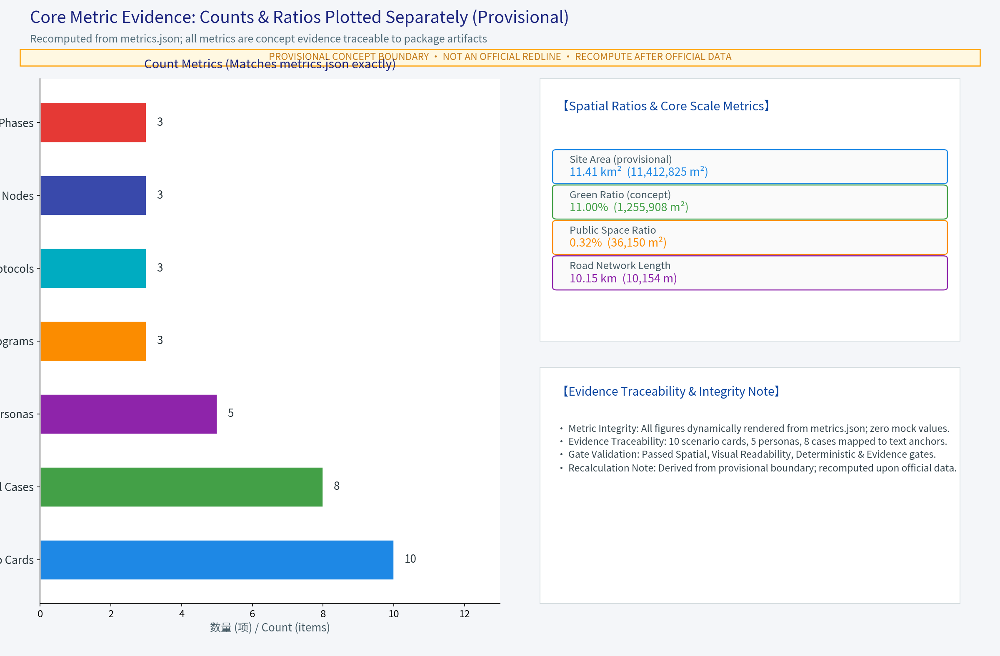

总览地图 · Master Overview Map
Master spatial structure: Three Areas, Three Nodes and Two Wings. Zone North (Zhongzhiyuan) maps to Unit Workshop (UNIT·BLOCK), Zone Mid (AI Origin Community) maps to Keep-Renovate Workshop (KEEP·BLOCK), Zone South (Dazhongsi) maps to Governance Pavilion (SUPERVISION PAVILION). Two Wings: Zhongguancun Technology Service Wing & Xiaoyuehe Scenario Empowerment Wing. Future Science City, Huairou Science City, E-Town and Jing-Jin-Ji are external synergy interfaces.

三层范围 · Three-Level Hierarchy
Coordinated Research Area: ~43.6 km²; Master Design Area: ~11.41 km² (provisional); Key Areas: ~368.4 ha across Zhongzhiyuan (192.1 ha), AI Origin Community (104.3 ha), and Dazhongsi (72.0 ha).
重点区域 · Key Areas & Nodes
Detailed design for the three nodes: Unit Workshop (SC-02, SC-07), Keep-Renovate Workshop (SC-01, SC-02, SC-10), and Governance Pavilion (SC-03, SC-04, SC-08).

用地分区 · Land-Use Structure
Concept single caliber land use: R&D 35.0%, Commercial 22.0%, Green & Water 18.0%, Residential Amenities 15.0%, Municipal Transport 10.0%.

交通慢行 · Mobility & Slow Traffic
Continuous 10.2 km greenway along the heritage railway park, RD-CROSS east-west stitching corridors, and time-shared responsive street sections.

蓝绿公共空间 · Blue-Green Ecological Network
Continuous blue-green and public open space network: 6 key ecological parks, green ratio 11.00% (1.26M m²), public space ratio 0.32% (36,150 m²).
建筑 · Building Stock Adaptive Reuse
Retain-renovate-demolish framework prioritizing conservation of railway heritage, adaptive reuse of research space, and minimal selective demolition.
更新项目 · Renewal Project Ledger
Phased renewal ledger: Near term (1-3 yr) Keep-Renovate pilot & ledger launch; Mid term (3-5 yr) Unit Workshop & mobility completion; Long term (5-10 yr) mature corridor operations. Annual events: Open Day, Bazaar, Health Check Season.

AI 场景 · AI Scenarios & Ecosystem
10 unique scenario cards (SC-01 to SC-10) with strict privacy boundaries, anonymized aggregate data only, and human-in-the-loop audit fallbacks.

核心指标 · Core Metrics

任务覆盖 · Task Coverage
Full compliance covering 23 task requirements from Announcement 1.3-1.5 and Agent Tasks 1-6, alongside 15 design-depth items.
自检状态 · Self-Check Validation
Four gates pass: Deterministic PASS, Spatial PASS, Visual Readability PASS, Professional Evidence PASS.
来源 · Sources
Data sources registered in sources.json (8 verifiable documents/regulations + 8 global benchmarks + 3 original asset records).
假设 · Assumptions
Key assumptions in assumptions.json (9 statements): All geometry and metrics are provisional concept suggestions to be recomputed upon official statutory data release.